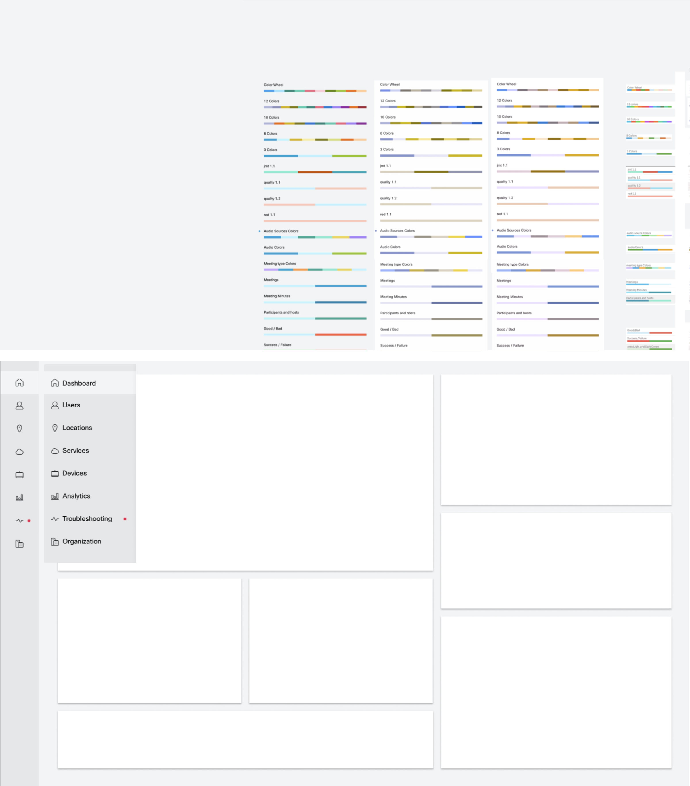
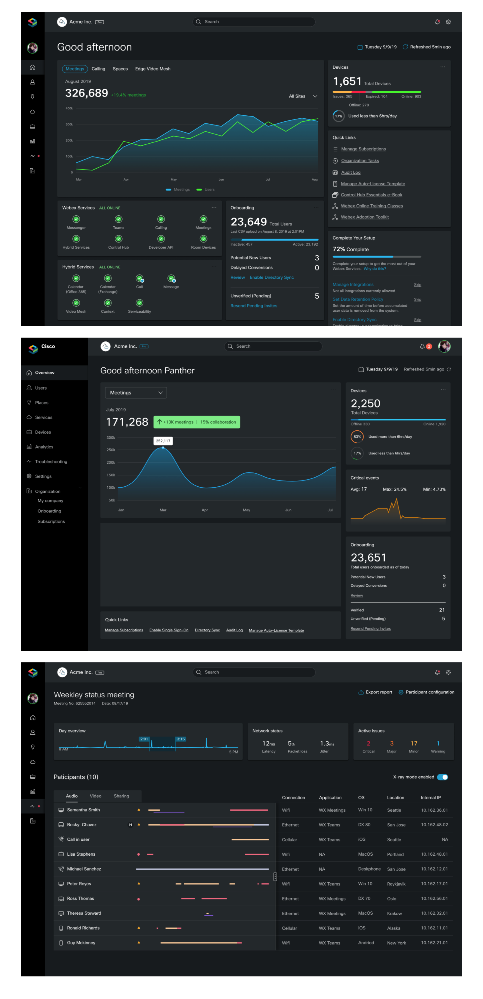
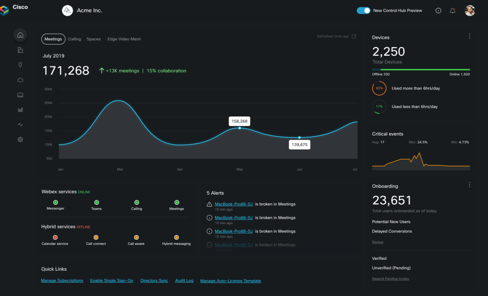
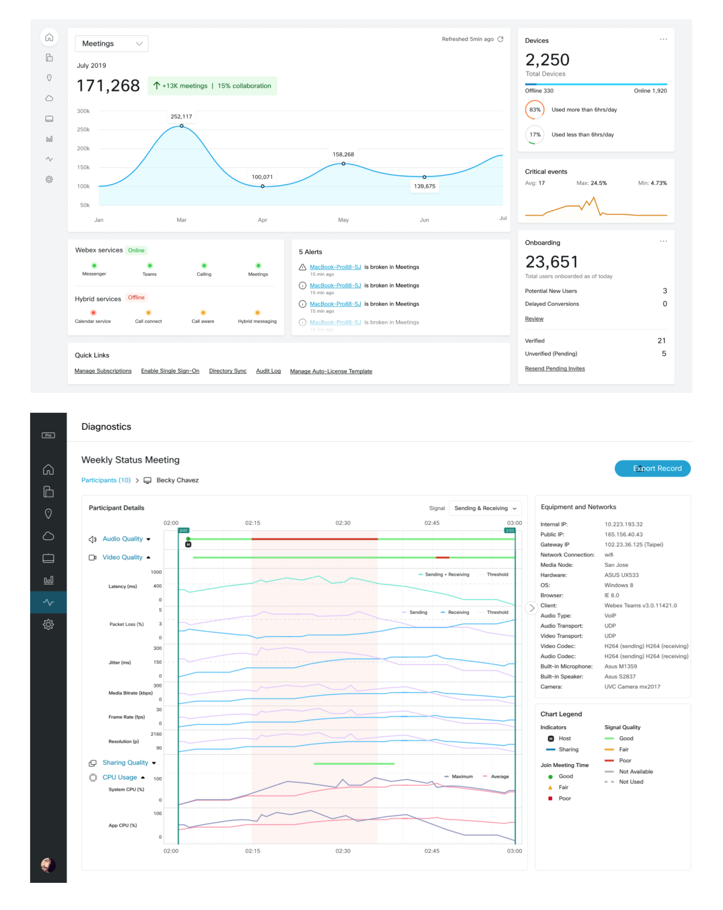
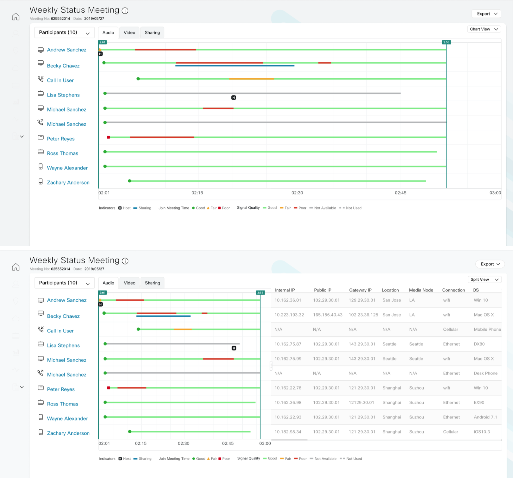
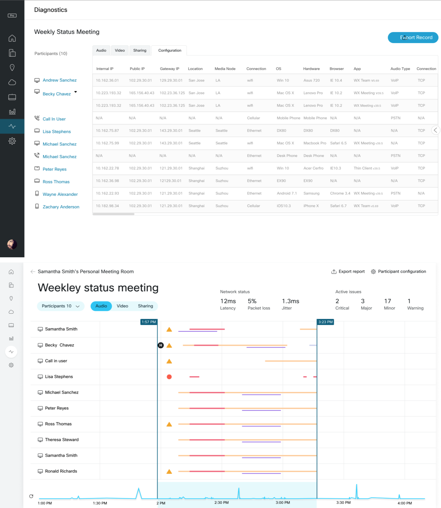

Cisco - Admin Data Dashboard

Design Overview : Data Visualization Refresh
Designing with Data can be a huge challenge, especially if there is a large number of users that is involved in a lot of activity.
How can we effectively monitor our users to make sure what they are doing is safe for the work environment. Are we sharing the right
files and is it infecting our system? We need to look at all the ways users interact within the organization by how they are handling
their data, whether its sharing, downloading, viewing, or transferring data over the cloud. By looks at each activity and find common
patterns, administrators and users who oversee the organization can get a better grasp on how to identify the problem.
The goal of the project
To enhance the visual design of the current Dashboard and make it more modern.
Who is the client?
• Internal Cisco employees and third party stakeholders.
Enhancing the Design
• Using clear visuals and colors to meet accessibility standards
• Design with a modern look and feel with sleed UI
• Have a strong contrast of colors between UI
• Define visual hierarchy between space and information
• Have a clear typography between visual elements
• Have raw data become more visual and simplified to read.
The main problem I will be addressing is lack of security and potential risks. What are the user needs based on my organization? How much data do I need to translate? What are the categories thats involved when downloading data? How safe is it to use this service over the cloud? Is it safe for my organization to continue to use this service?
 Dark UI & Updated ModulesOverall enhancement on a Dark UI theme look and feel while using new graphs and charts for a refreshed look. This is to help with the color contrast and easily spot information for the user if they choose to go for this option.
  Light Dashboard with Refresh Graphs
The light version uses a module based approach on information. The light colors are to help balance
all the different colors and give room to clearly articulate the data and the numbers.



Reflection and Insight
In conclusion, in order to have a good dashboard and graph, it’s best to always be as simple as possible.
Know what information the customers need to see first and eliminate any other infomation that causes noise.
The most important data should always show first and it should be a graph where it is easy to understand by
most users and also be the most visible. It’s also important how numbers are displayed right next to the graph
since having a lot of elements make it hard to see in a cluster of data. By having different module sizes, users
can easily distinguish whats important. Having a modern visual lenguage with strong elements such as color contrast,
graph types, and number display plays a key role in knowing what data your viewing is crucial.